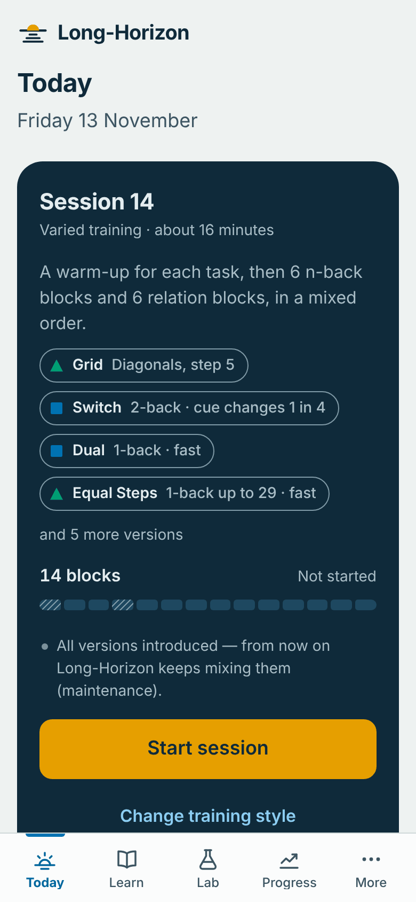
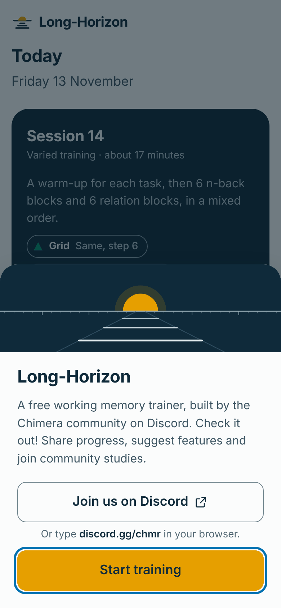
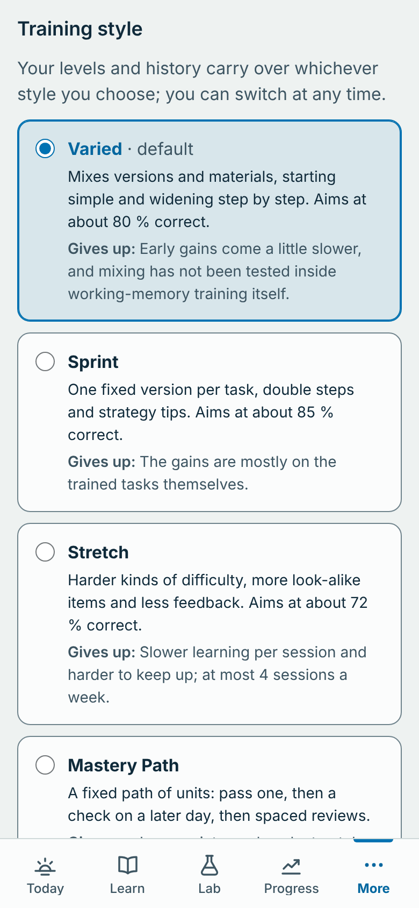
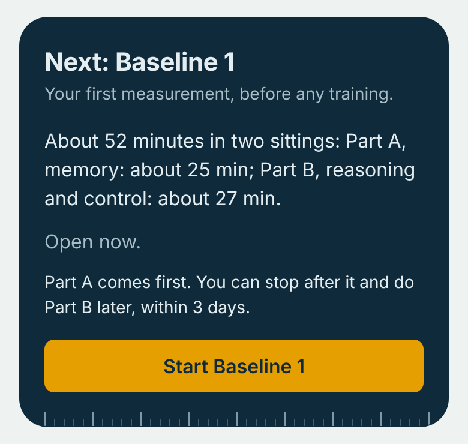
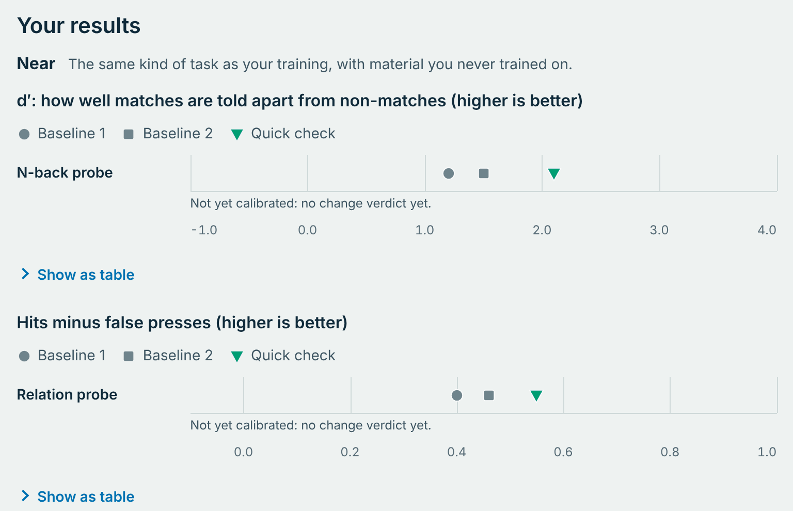
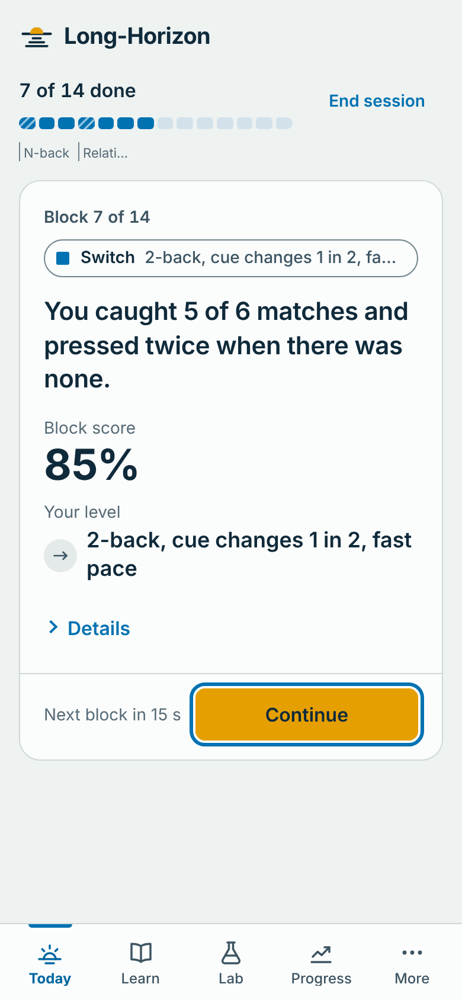
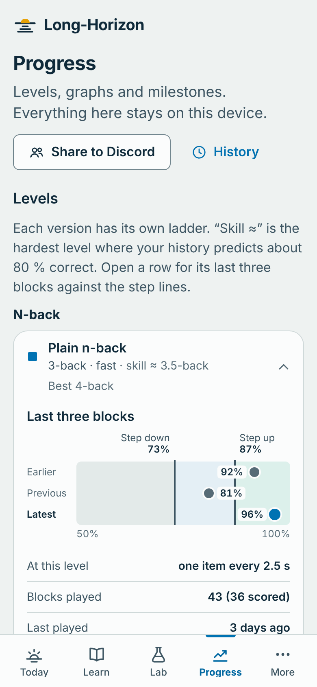

Start with chapters 1 and 2; read the rest when you need it. Grey boxes explain words. Blue boxes marked In depth hold technical detail you can skip. Amber boxes marked Honest note say where the evidence is thin. Green boxes are tips. The pictures come from the app with made-up training data.
Working memory is the small mental workspace where you hold a few things and work with them: a number while you dial it, the start of a sentence while you read its end, the steps of a plan while you carry it out. Long-Horizon is a free trainer for that workspace, with a built-in lab that measures what the training does.
Why Long-Horizon?
In AI, a long-horizon task takes many steps in a row, and models are now rated by their time horizon: the length of task, in the time skilled people typically need, that a model completes half the time (Kwa et al. 2025). Working memory is the same capacity in people: keeping a plan and its pieces intact while you work through it. In the trainer it is counted in steps: in n-back the n is your horizon, in Equal Steps how far back you compare, and in the relation grid how many symbols you relate at once. Working memory is also closely tied to reasoning: in a study of 131 people, the latent correlations with reasoning (between the underlying abilities) were about .8 for working memory and .9 for relational integration (Oberauer et al. 2008). Whether training it raises reasoning is the open question, and the Lab measures it.
What you do
You play short blocks, about a minute each, of a few kinds of task:
N-back and executive n-back: follow a stream of items and spot when one matches the item a few steps back, sometimes after a mental step such as “the day after” (chapter 3).
Relations: spot a relation across several items at once, such as equal steps between numbers or a row of matching symbols (chapter 4).
Span, if you turn it on: remember a short list while you check sums (chapter 5).
A session mixes these tasks: about 14 blocks, usually 15 to 25 minutes (Session length 10–30; Today shows the estimate). Three to five sessions a week work well, and the reference programme is 20 sessions.
What makes it different
Two tasks from recent papers, as close to the originals as each paper allows: Cao and colleagues’ executive n-back (2026) and Wang, Sun and Xiao’s number stream, here Equal Steps (chapter 10).
Six training styles, because the research disagrees about the best way to practise (chapter 7).
An optional Lab with tests you never train on, and a Study mode for experiments (chapter 8).
Quiet by design: during a block only the task is on screen (chapter 9).
Private, free and open source: no account, no tracking, your data stay on your device (chapter 11).
Honest note
People get much better at the trained tasks and often at very similar untrained ones. Controlled studies mostly find no gain in reasoning or IQ, so Long-Horizon measures transfer instead of promising it.
Five words you will meet
Horizon
How many steps you can hold in mind and still work with. In n-back and Equal Steps it is how far back you compare (the n); in the relation grid, how many symbols you relate at once; in a complex span, the length of the list.
Match
An item that fits the rule: press J or tap Match.
Lure
An item that almost fits the rule, such as the same item one step too far back.
Level
Your difficulty on one version of a task, such as “3-back”.
Transfer
Gains beyond the trained task: near (same kind of task), mid (other memory tasks), far (reasoning tests).
2 · Start here
Quick start
Long-Horizon runs in your web browser. There is nothing to install and no account to make.
Open it. Double-click index.html and keep the folder together, or use dist/long-horizon.html, the whole app in one file, which you can keep anywhere. Both work offline.
Use a current browser: Chrome, Edge, Firefox or Safari. Long-Horizon was tested in Chrome’s engine; if something looks wrong in another browser, please tell us in the Discord.
In depth · putting Long-Horizon on GitHub Pages
Upload or fork the long-horizon folder as a GitHub repository, then choose Settings → Pages → Deploy from a branch, branch main, folder / (root). A minute later the app is at https://<account>.github.io/<repository>/, where it can be installed and used offline.
On a phone

today-phonephone 390 × 844 · lightToday after a few sessions
Today shows your next session, what it holds and about how long it takes.
Open mighty-iq.github.io/Long-Horizon in Safari on an iPhone or iPad, or in Chrome on Android. Phones cannot run the downloaded files reliably.
Add it to your Home Screen so it opens full-screen, like an app. In Safari: Share → Add to Home Screen. In Chrome: the menu (three dots), then Add to Home screen or Install app.
Avoid in-app browsers. A link tapped inside Discord or another app may open in that app’s own browser, which can keep your progress apart from Safari or Chrome. Open Long-Horizon in Safari or Chrome; the app warns you when it can tell.
Sound: for the sound tasks, turn the volume up and the iPhone’s silent switch off, and try the sound check in Settings.
Back up: Safari may delete a site’s data after 7 days of browser use without a visit. Export from Progress now and then (chapter 11).
Your first ten minutes

chimera-popupphone 390 × 844 · lightThe pop-up at launch
The Chimera pop-up appears once each time you open Long-Horizon.
The Chimera pop-up greets every launch. Start training closes it (so do Enter and Escape); Join us on Discord opens discord.gg/chmr.
Welcome. Choose Start training now (the default) or Measure first, which runs the Lab’s two baselines before you train: about 50 minutes now and about the same again 2 to 7 days later (chapter 8). Either way, the lesson comes first.
The n-back lesson (about 6 minutes) teaches by playing, with letters on a fading “memory tape”, then a short check. Session 1 uses grid squares by the same rule; other tasks get a short lesson first.
Session 1 finds your level quickly: blocks move two levels at a time until your first step down.
Keys and taps
Key
Touch
Meaning
J
Match (Position in Dual)
The item matches (also Present in visual search and True in Span).
K
Sound
The sound matches, in Dual n-back.
F
No
No match (Absent, False), only where every item needs an answer: the Relation Grid, Span’s sums, visual search.
Space
Start
Start or continue.
EscP
Pause
Pause. A paused block never counts against you.
In most tasks doing nothing means “no match”. On touch screens No is always on the left (the left-handed layout mirrors it). Keys can be changed in Settings, including a Brain Workshop-style A/L preset.
3 · The training
N-back and executive n-back
Items appear one at a time. For each one, ask: is this the same as the item n steps back? At 1-back you compare with the item just before; at 2-back, with the one before that. Press Match when it is. Doing nothing means “no match”. The n is your horizon: you keep the last n items in mind and update them with every new one.
2-back. An arc means the item two back is the same: press Match. The second K is a lure: the earlier K was three back, not two, so you do nothing. The first two items cannot be matches yet.
A Dual n-back block: just the grid and the two pads.
Each item shows for half a second; a new one comes every 3 seconds (2.5 seconds at the fast pace).
A block has 20 + n items. The first n cannot be matches, so 20 are scored: 6 matches and 14 non-matches. A block takes about 70 seconds.
From 2-back on, 4 of the 14 non-matches are lures: the same item one step nearer or further than n. They catch you when you press on “familiar” instead of “exactly n back”.
Your level is n plus the pace: each n has a standard half-step and then a fast one, up to 16-back (Switch: 9-back). Hardly anyone gets near the top.
During a block nothing but the task is on screen: no score, no timer, no level.
Tip
If an item feels familiar, check its distance before you press. Learn → Strategy cards has ideas such as grouping: hold the last n items as one small set and compare item by item.
Five versions
Each version keeps its own level. In the three executive versions you don’t just hold the steps, you work on them: each one changes by a rule before you compare.
Version
What you see
Press Match when…
Opens
Plain
One stream: grid squares, consonants, digits, days, months, clock hours, compass points, shapes, glyphs or tones
the item is the same as n back
from the start
Dual
A square’s position and a sound, as two independent streams
J for a position match, K for a sound match, both when both match
by choice, any time
Transformexperimental
Days of the week as words (Cao et al. 2026); later also months, clock hours, compass points or a ring of squares
the item is the next one after the item n back: “the day after”. Later blocks may use another rule (two after, one before), shown on the rule card
when Plain reaches 2-back (usually in session 1 or 2), or at once if you pass the version’s lesson check
Arithmeticexperimental
Small sums such as 3 + 4, with answers from 1 to 9
the answer equals the answer n back (the sums always look different)
Switchexperimental
A digit or shape in a grid position, with a cue above it: WHAT or WHERE
the feature the cue names is the same as n back
Transform at 2-back. Compare each day with the day after the one two back. The same day as two back is a lure: it was the match in traditional n-back, but not here. Sunday wraps around to Monday.
The executive versions add lures of their own: in Transform, the same day as n back; in Arithmetic, a sum that starts with the same number but gives another answer; in Switch, a match on the feature the cue did not name. They make sure that a loose strategy cannot carry you up the ladder. Switch also has extra steps: cue changes on a quarter of the items, then on half, then the fast pace.
Honest note · why “experimental”
Executive n-back rests on one small study: 15 people per group and no untrained control group (chapter 10). Transform uses Cao and colleagues’ task so that the community can test it; Arithmetic and Switch are our own designs.
In depth · Cao’s procedure in the Protocols style
The Protocols style (chapter 7) runs Cao and colleagues’ procedure as closely as the paper allows: Transform with days; 500 ms per item plus 2.5 s; blocks of 20 + n items with 6 targets, pressing only on targets; 20 blocks per session (about 30 minutes), starting at 1-back. Within a session, n goes up after more than 18 of the 20 scored items are right and down after 5 or more errors; each new session starts 2 levels below where the last one ended. Six sessions, 1–2 days apart, then a 10-block check after about 3 months (offered from day 80). The paper does not report the response key, lures, feedback or whether Sunday wraps to Monday: Long-Horizon wraps the week and, as in the paper, leaves lures uncontrolled. A traditional arm (Plain n-back with days) is there for comparisons.
The memory tape frames the letter to compare with, then fades away.
The n-back lesson (about 6 minutes) uses letters on a memory tape: the recent items in a row, with a frame on the one to compare. You try 1-back at your own pace, with feedback on each answer; then the tape fades, the pace picks up and doing nothing becomes the answer. At 2-back, lures are pointed out and you tap the letter you compare with.
A check block closes the lesson: at 2-back, catch at least 4 of the 6 matches with at most 2 presses on the 14 non-matches. If it goes wrong, a mini-lesson targets the reason (too many presses, presses on lures, the wrong key, late presses). After two tries without a pass, training starts with the tape visible until two blocks reach the criterion; these assisted blocks stay out of your statistics.
Dual, Transform, Arithmetic and Switch each get a short lesson before their first block. Their checks run at 1-back, because they test the rule, not your memory span.
In depth · how a block is scored
For each stream Long-Horizon counts hits (matches caught), misses, false presses, presses on lures, and correct rejections. The block score is balanced accuracy: the hit rate and the correct-rejection rate, averaged, so pressing on everything scores only 50 %; in Dual the weaker stream decides. Sensitivity (d′), response bias and the median reaction time of hits are logged and shown under Details in the debrief. Levels move on accuracy only: devices add a constant 50–110 ms to reaction times, so reaction time is compared only within one person on one device.
4 · The training
Relations: Equal Steps, the grid and the stream
Relational integration means holding several items and the relation between them at once: numbers that rise in equal steps, a row of symbols that all match. As a measure it sits close to reasoning; training it has not been shown to help reasoning (chapter 10). All three tasks are labelled experimental.
Equal Steps
Wang, Sun and Xiao trained a number-stream task; Long-Horizon calls it Equal Steps. Numbers appear one at a time, at the same pace as n-back. At 1-back, press when the step from the last number is the same size as the step before it: 3, 6, 9 (steps of 3 and 3). At 2-back, press when the jump from the number two back equals the previous such jump. Up or down does not matter; only the size of the step counts.
The same numbers, two ways. At 1-back, 9 and 7 are matches because each repeats the step before it. At 2-back, 7 is a match because the jump from 9 to 7 equals the jump from 6 to 8. This is the worked example from Wang and colleagues’ paper.
Levels: 1-back, then 2-back, each with numbers up to 9, 19, 29 and 39: the paper’s eight levels. Beyond the paper, a fast pace and 3-back give headroom.
Where the paper is silent, the choices are ours: 500 ms per number plus 2.5 s; n + 1 lead-in numbers, then 20 scored with 6 matches; 4 lures, where the step is off by one; press only on matches.
In the Varied style it joins in session 3, after a short lesson: a worked example, steps written under the numbers, then jumps drawn as arcs, and a check.
In depth · Wang’s procedure, and our reading of the paper
The Protocols style follows Wang and colleagues as closely as the paper allows: 5 blocks of 20 numbers a day for 30 days; the level goes up if the day’s accuracy is above .80 and down if it is below .50, and that accuracy, shown at the end of the day, is the only feedback. In the study, participants chose their level each day by this rule; Long-Horizon applies it for you. The paper does not say how many items are matches, so this protocol makes 10 of the 20 matches, which lets the “below .50” rule work. Counting only the size of the step is the one reading of the paper that fits every mark in its worked example.
The Relation Grid on a phone: No on the left, Match on the right.
A 3×3 grid of cells, each a short group of symbols. Only one position in each cell counts: the last symbol, or the middle one for icons. Decide whether any line follows the rule at the top, and answer Match (J) or No (F). Each grid ends at your answer or when its time runs out.
Half the grids hold exactly one line that fits, none holds two, and grids come in pairs with the same symbol counts, so only checking the lines beats chance. The task comes from measurement research (Chuderski 2014; Bateman et al. 2019; Li & Birney 2026).
Tier 1, “Same”: only the last digit of each cell counts.
The grid has two kinds of difficulty: tiers change the rule, and steps within each tier add time pressure and distractions. The next tier opens when you reach step 6 of the current one (the criterion at 4.5 seconds with distractors). A new tier starts one step below what the learner model predicts (often step 2–4), moves two steps at a time until its first step down, and gets a short lesson first. Earlier tiers keep appearing, so nobody hits a dead end.
Tiers: the rule
Tier
Rule · lines
T1
Same · rows and columns
T2
Ascending (direction stated) · rows and columns
T3
Different · rows and columns
T4
Same or Different, one rule per block · rows, columns and diagonals
T5
Five the same · five-cell crosses and T shapes
T6
Two features, e.g. same shape and all-different fill · rows and columns
T7
A 4×4 grid, same or different on lines of four
T8
Five different · optional and very hard
Steps within every tier: the pressure
Step
Time
What changes
1
8.0 s
1–4 cells stay from the last grid (a learning step)
2
5.5 s
cells still stay
3
5.5 s
all cells replaced
4
4.5 s
–
5
4.5 s
+ 6 look-alike symbols where they do not count
6
4.5 s
+ lure lines (lines that almost fit)
7
3.5 s
–
8
2.75 s
–
9
2.0 s
the floor
The content changes too: digits, letters, icons, dot counts, bar orientations and new glyphs; dots placed in small frames are kept for the Lab and never trained. The lesson (about 4 minutes, just before your first grid) shows a row, a column and a lure line, then slow grids and a check: find at least 7 of the 10 grids with a line, with at most 2 false Matches. The lowest steps of every tier are slow learning steps, because time pressure blocks relational learning (Chuderski 2016).
Relation Stream
The original monitoring form of the task, after Oberauer and colleagues: the grid stays on screen while one cell changes at a time, and you press Match as soon as a line with the pattern appears. Its six steps: a change every 2.0 seconds with one cell changing, then 1.5 s, 1.0 s, 1.0 s with two cells, 0.75 s with two, and 0.75 s with three. It opens with tier T3, joins the Varied style in session 10, and runs at most one block per session. A new line can only appear through the cell that just changed, so look there first.
5 · The training
Span (opt-in)
Span trains the storage-and-processing side of working memory: you hold a list while you do something else in between. It is off until you turn it on.
How it works: a sum alternates with an item to remember. “True or false?” asks if “7 − 3 = 4” is right; answer True or False, then a letter shows for one second. After 2 to 9 such pairs, you recall the items in order on a keypad.
Versions: Operation span (letters), Symbol span (symbols) and Backward span (recall in reverse order).
Timing: each sum may take up to a personal limit, your average plus 2.5 standard deviations from practice, as in the automated operation span (Unsworth et al. 2005). Recall is untimed.
Scoring: the share of items recalled in the right position. A block can move up only when at least 85 % of the sums are judged right; the list grows after 80 % recall or more and shrinks below 60 % (lists of 2 to 9 items; your first length comes from the learner model). One of a block’s three lists may be lost to a timing hiccup and the block still counts.
Why it is off at first. During the 20-session programme Span stays off, so that the Lab can test whether n-back and relations training carry over to complex span, which was Cao and colleagues’ main outcome; the Lab’s span test is spatial, Span’s training is not. Turn it on in Settings whenever you like; it is offered after the programme and is never part of Study mode. With Span on, a session has 15 blocks and a 40/35/25 balance of n-back, relations and span.
Honest note
In the only trial that compared the facets of working memory against an active control, storage-and-processing training transferred to working memory and reasoning (von Bastian & Oberauer 2013). That is a single study, and we could read only its abstract.
6 · The training
Variety and interleaving
Long-Horizon starts narrow and then mixes things up. New tasks are practised on their own first; later, versions take turns; finally they come in random order.
When versions join, in the Varied style (sessions 1–12). A version joins only once it is open; grid tiers and Equal Steps levels open by their own ladders.
Never the same block twice: every block is a fresh sequence from a logged random seed.
The ramp: sessions 1–3 are blocked, each version in one stretch; sessions 4–6 take turns; from session 7 the order is random, with at most 2 blocks of a version in a row.
One new thing at a time, in the order above; glyph sets change every 5 sessions. Once everything is in, Today says “All versions introduced” and the mixing continues; ladders never dead-end.
A rule card before every block shows the version, the rule, the keys and a one-line example, so mixing never leaves you guessing. The first blocks on each new version are logged as a learning curve.
In depth · why mix, and why not at once
Interleaving beat blocked practice in a meta-analysis, g = .42 (about .29 after correcting for bias), mostly in learning categories; for learning words it reverses (Brunmair & Richter 2019). In motor learning, a blocked → serial → random ramp beat both pure schedules (Porter & Magill 2010). Variety slows early learning and helps later generalisation, so newcomers should start narrow (Raviv, Lupyan & Green 2022). No working memory training study has tested interleaving yet: Long-Horizon’s ramp is a reasoned bet, not a proven method.
7 · The training
The six training styles
Research on practice points in different directions: the fastest way to get good at a task is not obviously the best way to make the gains carry over. Rather than hide that, Long-Horizon offers six styles. Varied is the default; the others are one tap away in Settings → Training style. Switching never loses anything, because levels belong to task versions.
Style
Aims for
How it runs
What it gives up
Varied the default
about 80 % (up at .87, down below .73)
The ramp and introduction order of chapter 6; a reflection prompt every 3rd session; strategy cards on request.
Slower early gains; untested inside working memory training
Sprint
about 85 % (.92 / .78)
Blocked practice on one fixed version per task (Plain n-back with grid positions, or an executive version you pick; the Relation Grid with digits); double steps until your first step down each session; strategy cards in sessions 1–3; a flash after each answer; up to 2 sessions a day, 3 hours apart.
Breadth: labelled “trained-task gains”
Stretch
about 72 % (.80 / .64)
Opens after 6 counted sessions. Random order and harder kinds of difficulty: 6 lures, the fast pace earlier, the next tier at a longer time rather than a shorter time; a summary every 2nd block, level changes revealed at the end; 20 hours between counted sessions, at most 4 a week.
The best learning rate; more people give up
Mastery Path
a pass bar per unit
A fixed path of units, each a version at a target level. A unit is passed when 2 of its last 3 blocks reach .87 (n-back and Equal Steps) or .85 (Relation Grid); next session, a check on fresh material must reach .80 or a short corrective cycle follows; reviews come 2, 7 and 21 days later.
Variety and time
Protocols
each paper’s own rule
Runs published procedures as closely as each paper allows (where a paper is silent, Long-Horizon’s choices are listed in chapters 3 and 4): Cao 2026 executive n-back and its traditional arm, Wang 2025 Equal Steps, Jaeggi 2008 dual n-back (up with fewer than 3 errors per stream, down with more than 5; Jaeggi used spoken consonants, Long-Horizon plays tones unless you choose spoken letters).
Trains only what each paper trained; Cao’s sessions take about 30 min
Free play + Coach
your choice (the coach aims at 80 %)
Pick the version, level and pace (Normal or Fast) of each block and see your predicted score. The coach suggests “At your edge”, “Due for practice”, “Growing fastest” and “New to try”, one card per version. A level moves only when you play at that level.
People tend to pick easy, massed practice
Why six? Each conflict in the research gets a style on each side: mastery gating (Mastery Path) against free practice (Free play); blocked practice (Protocols, Sprint) against interleaving (Varied, Stretch); about 85 % success (Sprint, Mastery Path) against about 80 % (Varied) and about 72 % (Stretch); a taught strategy (Sprint) against discovery with prompts (Varied); fixed material (Sprint) against varied material (Varied); intense practice (Sprint) against strictly spaced practice (Stretch).
Choosing a style

settings-stylesphone 390 × 844 · lightSettings → Training style
Training style in Settings: each style says what it gives up.
New users start in Varied. Help me choose asks one question: what matters most to you? Getting good at these tasks fast (Sprint), the best chance that it carries over as far as theory can tell (Varied), a structured course (Mastery Path), a hard challenge (Stretch), following the papers (Protocols), or choosing for yourself (Free play).
Sessions and feedback
At the default length each task gets 1 warm-up block and 6 rated blocks: 14 blocks in all. “Block 7 of 14” counts every block, warm-ups included. Protocols follow their papers: Cao 20 blocks (about 30 min), Wang 5 blocks (about 7 min), Jaeggi 20 dual blocks.
One session counts per calendar day (Sprint: two, 3 hours apart). Your weekly target is 3 to 5 (default 4), never above the style’s cap (Stretch: 4). After a session, the summary says when the next one would count.
During blocks: nothing in Varied, Mastery Path and Free play (a flash after each answer if you turn it on); a flash by default in Sprint; nothing in Stretch; Protocols do as each paper did.
In depth · how levels move (every style except Protocols)
Score: balanced accuracy per stream; with two streams, the weaker one decides. Span uses the share of items recalled.
Controller: after each rated block, up one step if the score reaches the style’s upper line, down one if it falls below the lower line. Every 10 rated blocks the lines are nudged if your real average drifts more than 3 points from the target, because fixed-step rules miss their targets (García-Pérez 1998); the upper line can drop by at most one point, so shortcuts such as pressing on anything familiar stay below every style’s step-up line and cannot lift a level.
Warm-up and placement: the first block of each task in a session runs below your level and never moves it. A version or grid tier you have never played starts one step below the learner model’s prediction, then moves two steps at a time until its first step down; the debrief calls this “Starting level”.
Interruptions and fatigue: a block with any pause, or with more than 20 % of its items not counted for timing (chapter 12), moves nothing. If your score falls .15 or more below the session’s first two rated blocks, twice in a row, the app suggests stopping.
The learner model is an Elo/Rasch-style rating that drives placement, the coach, predicted scores and level-equivalents such as “n-back ≈ 3.5-back”. There is no abstract score, and the model never overrides a style’s rules.
8 · Measuring
The Lab and Study mode
The Lab is optional. It measures what your training did, using tests you never practise, so a result means more than “you got better at the game”. Study mode turns it into a real experiment with a control group, run by the community.
What the Lab tests
Part
Tests
Minutes
Part A · memory
Check-in (sleep, alertness, expectations); n-back probe with Lab-only glyphs at 2- and 3-back; relation probe with Lab-only content (40 grids, same and different rules); spatial complex span (symmetry judgements and grid locations, 12 trials at loads 2–5); spatial memory updating (10 trials)
≈ 25
Part B · reasoning and control
Check-in; generated 3×3 matrices (18 items, 8 options, 1–4 rules, 45 s each); number and letter series (14 typed items); Graph Mapping (16 items); task switching with digits (odd/even or low/high, as a cue says); close-out (effort, help used, strategy)
≈ 27
Quick check
Check-in, n-back probe and relation probe
≈ 12
Minimum
Check-ins and close-out, n-back probe, relation probe, span, matrices and series
≈ 36
Extended
For studies: the standard tests plus location–colour binding
+ 5
Generated, solver-checked and never trained: no items come from Raven’s matrices, ICAR or other published tests, and the Lab’s stimulus sets never appear in training. Four parallel forms rotate across your visits. The Lab shows no rewards.
Two tests mirror the papers: task switching follows Cao and colleagues’ digit design, and the matrices are of the Sandia type (Matzen et al. 2010) that Wang and colleagues used. The complex span is spatial, because letters can be written down at home. Task switching is exploratory: switch costs are known to be unreliable (Hedge et al. 2018).
Near, mid and far depend on what you trained, so Long-Horizon sets them from your training log. Near: the n-back probe if you trained n-back, the relation probe if you trained the Relation Grid, the spatial span if you trained Span (Equal Steps has no near test yet). Mid: the other memory tests and task switching. Far: matrices, series and Graph Mapping.
When to test
The Lab schedule with “Measure first”. Blue dots are Lab visits, green bars are training. Reasoning tests run only at the baselines, the Post-test and the Follow-up.

lab-homephone 390 × 844 · lightLab home with the visit plan
Lab home: the next visit and how long it takes.
Baseline 1, then Baseline 2 two to seven days later, both before training. The first retest raises scores the most, so Baseline 2 is your reference. Then a Quick check before session 11, a Post-test 1–3 days after session 20, and a Follow-up 8–12 weeks later.
On a training day, do the Lab before your first session. Visits on another kind of device or at a different time of day are flagged. A visit you skip shows as “Left out”.
Time: a Standard visit takes about 52 minutes in two sittings: Part A first, then Part B within 3 days. The whole schedule takes about 3.7 hours over about 4 months. That is why Minimum and Quick check exist.
If you chose Start training now, you can still use the Lab: your visits are labelled “no baseline” and show scores without a change verdict.
Reading your results
Your scores appear as dots, one per visit, always with the retest caveat. There are no IQ scores and no percentiles, and one person’s change cannot show what caused it.
A change verdict appears only once a test is calibrated: at least 50 people with both baselines have pooled their data, and the community has published a calibration file (made with tools/analysis) that you import or that ships in a release. Until then each test says “not yet calibrated” and shows the typical retest gain from the research.
Above or below the noise band means a larger change than measurement noise alone explains; inside means noise could explain it. The usual gain from retaking the tests is not subtracted, so it is not proof that training caused the change. When the calibration file holds the retest gain of at least 30 people who did not train, a second line says how the verdict looks after subtracting it.
At the Post-test, Long-Horizon asks you to export: you need that file for the Follow-up if your browser clears its storage.
In depth · the noise band
Verdicts use the reliable change index (Jacobson & Truax 1991). For a test with retest reliability r and spread SD, a change counts as real at the 95 % level only if it exceeds 1.96 × SD × √(2(1 − r)): about 1.52 SD when r = .70, 1.24 SD at .80 and 0.88 SD at .90. Expected effects on far tests are between 0 and about 0.2 SD, well inside such a band, which is why one person’s result says little about cause and why studies pool many people.

lab-resultsdesktop 1366 × 768 · lightLab results: dots per visit, near / mid / far
Lab results on a computer. Each dot is one visit; verdicts appear only for calibrated tests.
Study mode: a real experiment
Study mode compares two programmes over the same schedule. In most templates one of them is adaptive visual search: is there a T among the rotated Ls? (PresentJ, AbsentF). It has no memory load, and its number of symbols (8 to 64) and time allowed adapt by the same rule as training. Its blocks have 40 searches, so both programmes take about the same time per session: about 18 minutes at the default length, about 30 minutes in the Cao template and about 7 minutes in the Wang template. Both get the same screens, debriefs, goals and badges, and the screens describe every programme in the same neutral words, so participants are not told which one is the comparison. Control participants get the full programme afterwards, once they choose Leave the study.
Template (as the app names it)
Programmes compared
Long-Horizon study (20 sessions)
Long-Horizon training (Varied, n-back and relations, Span off) and visual search; optionally a Lab-only group
Cao et al. 2026 replication (6 sessions)
Executive and traditional n-back on Cao’s procedure, optionally with a visual-search group: the untrained comparison Cao’s study lacked
Wang et al. 2025 replication (30 days)
Equal Steps on Wang’s procedure and visual search, an active control of about the same session length (Wang’s quiz control was neither adaptive nor matched)
Who: adults only, after a plain-language consent, under a random anonymous ID. Questions cover your expectations (at Baseline 2 and the Post-test) and a guess at your programme (at the Post-test).
Assignment: on your own, you draw your programme after Baseline 2. The app first shows only a commitment code: post it in the Chimera Discord (or note it), confirm “I have posted or noted the code”, and only then does it show your programme. Your export later shows that the programme you followed is the one behind the code you posted; it cannot show that a draw was not repeated before the code was posted. In a coordinated study, the coordinator issues a code only after seeing a finished Baseline 2.
Leaving:Leave the study keeps your data, records the date you left in your study file, and training then follows your own training style.
Headroom: in 60-day simulations, 8 % of the default template’s visual-search learners reached the top step (11 % in the Cao template, 3 % in the Wang template); one more step may be needed after pilots.
Honest note · the codes are not secret
Long-Horizon is open source, so anyone who reads the code can decode a coordinator’s code. Keeping the programme hidden depends on everyone playing fair, not on cryptography; the README and the consent text say so too.
Running a community study
Plan and preregister before anyone enrols: template, hypotheses, the smallest effect that would matter and a stopping rule. Run analyze.py --plan (below) and post its output publicly, for example in the Chimera Discord, before the first draw.
Recruit adults. Each turns on Study mode, reads the consent and does both baselines; programmes are assigned only then.
Train on the template’s schedule, then the Post-test (with an export) and the Follow-up 8–12 weeks later.
Pool and analyse. Participants send their exports if they choose to. Check the commitment codes, run the analysis and report every outcome, with the dropouts in each group.
How many people? Per group, roughly: 20–30 to test near transfer; 70–100 to show that far transfer is smaller than d = 0.3; and 150–200 to detect an effect of d = 0.2.
In depth · the analysis tools (tools/analysis)
Python scripts that run outside the app on pooled exports (pandas, statsmodels and scipy), tested on synthetic data. analyze.py analyses one study template at a time (they are never pooled), with a fixed outcome plan per template: the near, mid and far composites are primary for the Long-Horizon study, complex span (with task switching second) for the Cao replication, and matrices for the Wang replication. It runs an ANCOVA of the Post-test on the baseline for each comparison, on everyone with both visits (available-case, not a full intention-to-treat analysis), with Holm correction across each family of outcomes, equivalence tests (TOST, by default against ±0.3 SD; Lakens et al. 2018) and Bayes factors (BF10 above 3 favours an effect, below 1/3 favours none). Every report ends with a fingerprint of the code and options. calibrate.py makes the calibration file (at least 50 people); synth.py makes fake exports with known effects, to rehearse.
Do not split people into “responders” by their training gain, correlate baseline with gain, read within-group change as a training effect, or report single outcomes without the correction.
9 · Progress
Progress, badges and goals
During a block you see only the task. Everything else waits for the breaks: a short debrief after each block, and your levels, goals and graphs between sessions.
After each block

debriefphone 390 × 844 · lightThe debrief after a block
The debrief: plain words first, details on request.
A short debrief, in plain words first: “You caught 5 of 6 matches and pressed twice when there was none.” Then the block score, your level for the next block, and where you are in the session (“Block 7 of 14”). Sensitivity (d′), response bias, lures (items that almost fit the rule) and reaction times sit behind Details. The debrief moves on by itself, or you can skip it. A one-second celebration appears only for a level-up or a personal best; when n or a Span list grows, it says so: “Your horizon grew: now 4-back.”
Bars, levels and counters
The session bar, the weekly ring toward your target, and programme milestones every 5 sessions.
For each version, the “Last three blocks” meter shows your last three scores against the step-down and step-up lines, so you can see a level change coming.
Levels are the real ladder of each version (Relation Grid: “step 4 of 9”), with an estimate in the same unit, personal bests and lifetime counters that never reset.
Graphs (level and score per session, learning curves, minutes per week, Lab results) and a history of every session, block and trial, with CSV and JSON export.
Twelve badges

progressphone 390 × 844 · lightProgress: levels and meters
Progress: levels, meters and personal bests.
Badges mark learning milestones. They stay hidden until you earn them, they are never for speed, volume or streaks, and nothing ever requires them.
Rules learned
You passed the n-back check in the tutorial.
3-back reached · 5-back reached
An n-back version reached 3-back, then 5-back.
All three executive versions
You have played Transform, Arithmetic and Switch.
Relations: Different tier
The Relation Grid’s Different tier is open.
Relations: five-cell patterns
The Five the same tier is open.
Explorer
You have tried every version and every kind of item.
Both baselines done
Baseline 1 and Baseline 2 are finished.
Post-test done · Follow-up done
Your Post-test, then your Follow-up, is finished.
Comeback
You came back after 14 or more days away.
Reflective
You wrote a strategy note.
Weekly goals, not daily streaks
You set a weekly target of 3 to 5 sessions. Rest days are built in; a session you could not do can be made up later in the week (one a day); a planned break pauses the goal; every Monday is a fresh start; and the app never shows loss messages.
Focus mode (in Settings) hides all of this, and the Lab never shows it. Share to Discord copies a short summary (sessions, minutes and your newest badge, and your levels only if you tick “include my levels”) that ends with discord.gg/chmr.
In depth · why so quiet?
Gamified cognitive training felt more motivating (g = .72), but its cognitive outcomes were not shown to improve (g = .27, not significant; Vermeir et al. 2020). In a preliminary study with 107 children, a score visible during play reduced n-back gains (Katz et al. 2014). Badges plus leaderboards lowered motivation (Hanus & Fox 2015), and broken streaks cut engagement (Silverman & Barasch 2023).
10 · Background
The research, plainly
Long-Horizon claims only what the evidence supports. Here is that evidence in plain words, including the disappointing parts.
Executive n-back (Cao et al. 2026)
Classic n-back with one added operation: the items are the seven days of the week, and you press when the day shown is the day after the day n back. The idea comes from an imaging study that added a manipulation step to n-back with days of the week (León-Domínguez et al. 2015). Thirty students trained for six 30-minute sessions, 15 on the executive version and 15 on the traditional one.
Operation span, a complex span task, improved in the executive group only (group × time p = .005, ηp² = .25).
Switch costs fell in both groups; the executive group’s advantage was marginal (p = .069).
Stroop and Raven’s matrices improved in both groups with no difference between them; the authors suggest practice from the pre-test.
At the 3-month follow-up (27 people) no score had declined significantly. The groups no longer differed on the operation span score or on switch cost; letters recalled still favoured the executive group (p = .028, with post-test and follow-up pooled).
The executive group trained about one level lower (about 6.7-back against 8.4-back by session 6).
Limits
Small groups; no untrained control group, so retest effects cannot be separated from training; not preregistered; many comparisons without correction; and the task was not fully described, so Long-Horizon fills the gaps with stated choices. In short: a small, interesting, unreplicated result. For context, a 2026 meta-analysis of 55 studies (3,492 people) found that updating training transferred slightly to span tasks (g = 0.18) but span training did not transfer to updating (0.05); the difference between the two was marginal (p = .073; Fu et al. 2026).
Relational integration (Wang et al. 2025, and others)
As a measure, it is strong. A relational-integration factor correlated about .9 with reasoning, as a latent correlation (Oberauer et al. 2008, 131 people), and relation-monitoring tasks explained reasoning beyond complex span, short-term memory and other measures (Chuderski 2014, 243 people; Bateman et al. 2019, 100 people).
As training, the record is weak. Trained groups improved on the trained task: in one programme the relational task gained about d = .8 yet did not transfer to another relational task (von Bastian, Langer et al. 2013, 123 people). Transfer to other content was weak (Hilbert et al. 2017, 216 people), no study found transfer to reasoning (Lange & Süß 2015; Hilbert et al. 2017; Himi et al. 2023, 171 people), and binding training gave Bayesian evidence for no transfer (De Simoni & von Bastian 2018).
Wang, Sun and Xiao 2025 trained 29 students on a number-stream task (Long-Horizon calls it Equal Steps), 5 blocks a day for 30 days, while 28 did a general-knowledge quiz. On the only reasoning test, a set of matrices close to ceiling, both groups improved equally, with no group × time effect on accuracy or speed. The reasoning claim in the paper’s title rests on EEG changes alone, and the quiz control was neither adaptive nor matched for dose.
The only head-to-head trial of the facets of working memory with an active control (von Bastian & Oberauer 2013; abstract only) found transfer to reasoning after storage-and-processing training and after switching training, but not after relational training. That is why Long-Horizon also trains switching (the Switch version) and offers Span.
How transfer behaves
Kind of gain
Typical effect
Sources
The trained task
large (g ≈ .9, in older adults)
Sala et al. 2019
Near: the same paradigm, new material
medium (untrained n-back g = .62)
Soveri et al. 2017; Gathercole et al. 2019
Mid: other working memory tasks
small (g ≈ .2–.3); several well-run studies found none
Melby-Lervåg et al. 2016; Rodas et al. 2024; De Simoni & von Bastian 2018
Far: reasoning, IQ, school
about zero with active controls (g .01–.06)
Au et al. 2015 (.06 against active controls, .44 against passive ones); Melby-Lervåg et al. 2016; Sala & Gobet 2020; Watrin et al. 2022 (two years of training)
Shared structure drives near and mid transfer: d = .54–.90 when the trained and tested tasks share a paradigm, against about .11–.35 when they do not (Gathercole et al. 2019). N-back and complex-span training did not transfer to each other (Holmes et al. 2019).
Within people, matrix-reasoning gains went with gains on an untrained n-back (Pahor, Seitz & Jaeggi 2022). That is a correlation; their preregistered, actively controlled trial with 189 people showed no overall reasoning effect.
Expectations matter: a placebo framing alone raised a matrices score by d ≈ .5 within an hour (Foroughi et al. 2016). That is why Study mode uses an active control and asks about expectations.
How Long-Horizon practises: training at your edge beat a fixed level (Lilienthal et al. 2013), though self-chosen difficulty did as well in one study where no group transferred (von Bastian & Eschen 2016); about 85 % success is a theoretical sweet spot (Wilson et al. 2019), untested here; 20 sessions spread over 20 days helped children’s reasoning more than the same 20 packed together (Wang, Zhou & Shah 2014; one-tailed p = .038); a taught strategy speeds early gains, but its edge fades (Laine et al. 2018; Fellman et al. 2020); mastery learning raised aligned test scores by about half a standard deviation (Kulik et al. 1990); desirable difficulties help only if the learner can cope (Bjork & Bjork 2020).
What Long-Horizon claims
You will get much better at the trained tasks, often better at very similar untrained ones, and maybe slightly better at other memory tasks. Most controlled studies find no effect on IQ or reasoning, and one person’s Lab change cannot show cause. Variety, spacing, training at your edge and training several processes are choices that theory suggests may help near and mid transfer; none is shown to. Long-Horizon is not a medical device and does not diagnose or treat anything.
Limits of this chapter
The two studies behind the headline tasks are small and have not been repeated. Long-Horizon’s thresholds and step sizes are design choices, checked with simulated learners, until community pilots refine them. The Lab’s tests are new: their reliability, and how equal their forms are, will be known only once the community has data. Some sources could be read only as abstracts.
11 · Background
Your data and privacy
Long-Horizon has no account, no analytics and no ads, and it sends nothing anywhere. Everything stays in your browser’s storage on this device. Your data leave the device only when you export them yourself.
What is stored: your settings, levels and learner model; a summary of every session and block; Lab and Study records (never trimmed); and trial-by-trial logs of your newest 60 sessions. About a year and a half of daily training fits; when saved data grow large, blocks older than 90 days are compacted (levels, history and charts stay the same).
Saving notices: when saved data get large, Long-Horizon asks you to export a backup. If it cannot save, Today and Settings say “Not saved on this device” and why: storage is blocked (some previews and private windows), storage is full, or a newer version of Long-Horizon saved data in another tab (reload to use it). Progress then lasts only while the page is open, and Export still works.
Export (in Progress, and at the Lab’s Post-test) gives you a file and a box of text you can copy, in case downloads are blocked. Import merges a file into what is already there. Two tabs at once are safe: their records merge.
Clearing your browser’s data deletes Long-Horizon’s data, and Safari may delete it after 7 days of browser use without a visit. Long-Horizon reminds you to back up after milestones and shows your last backup date on Progress.
Study exports are yours to send or not. They carry a random anonymous ID, your Lab and training records, your Study answers, and the kind of device you used and when; never your name or e-mail address.
Reset (Settings → Data) deletes everything on this device. The Discord link opens Discord’s website, where Discord’s own privacy terms apply.
12 · Help
FAQ and troubleshooting
I hear no sound, or it seems late.
Browsers allow sound only after a tap or key press, so start the block with a tap or Space. Check the volume and the iPhone’s silent switch, and run the sound check in Settings; if sound stops during a block, the block pauses and asks for a tap. Bluetooth headphones add delay: in Settings → Sound, use Sound timing → Measure my delay. Tones are the default. Spoken letters (C, H, K, L, Q, R, S, T, synthesised with the free Flite voice) are an experimental option: nobody has yet checked them by ear, so tell us in the Discord if one sounds unclear.
Some items were “not counted”.
Long-Horizon times every item in frames of your screen. An item hit by a stall is not counted and never counts against you; the debrief lists such items under Details as “Items not counted”. A block with more than 20 % of its items not counted moves nothing. Close other tabs and apps, plug in a laptop, turn off battery saver (some phones drop to 30 frames per second), and use a regular browser rather than an in-app one.
My level went down. Does speed matter?
Levels move both ways to keep you at your edge, where you get about 80 % right (Varied style), and they move on accuracy only. Speed is compared only within one person on one device.
I was interrupted in the middle of a block.
Press Esc or P; switching to another app pauses by itself. On Resume, n-back, Equal Steps and Relation Stream blocks restart with a fresh sequence after a 3-2-1 lead-in; Relation Grid and visual-search blocks continue with the next item, and Span with the next list. A paused block moves nothing. End session in the pause menu asks before it ends anything.
My phone’s screen turns off during blocks.
Long-Horizon asks the phone to stay awake during blocks, but battery saver can refuse. On iPhones with iOS before 18.4 this did not work for apps added to the Home Screen: raise the auto-lock time, or use Safari itself.
It runs inside a preview or chat window, but Export and links do nothing.
Sandboxed previews block downloads, new tabs and sometimes storage. Use Export’s copy box, type discord.gg/chmr into your browser, and open the downloaded long-horizon.html or index.html for everything to work.
Which browsers work?
Long-Horizon was tested in Chromium, the engine of Chrome and Edge. Firefox and Safari rely on careful feature detection; please report anything odd in the Discord.
Can I skip the tutorial?
Yes: pass its check straight away. Lessons can be replayed from Learn; How to play in the pause menu repeats the rule and keys. Learn also has untimed practice and a glossary.
Can I use Long-Horizon with a screen reader?
Menus, results and settings have screen-reader labels; the timed tasks are not accessible with a screen reader. Long-Horizon also offers keyboard-only use, large text, a left-handed layout, reduced motion and two themes, and never uses colour as the only cue.
Will this raise my IQ?
Long-Horizon does not claim that, because controlled studies do not support it (chapter 10). It will make you better at its tasks, and the Lab lets you measure what else changes.
13 · Background
References
Every work the app and this guide cite. Titles are shortened to their main clause; each DOI or arXiv number links to the publication.
Alfieri, L., Brooks, P. J., Aldrich, N. J., & Tenenbaum, H. R. (2011). Does discovery-based instruction enhance learning? Journal of Educational Psychology, 103(1), 1–18. doi:10.1037/a0021017
Andersen, E., et al. (2012). The impact of tutorials on games of varying complexity. Proceedings of CHI 2012, 59–68. doi:10.1145/2207676.2207687
Au, J., et al. (2015). Improving fluid intelligence with training on working memory: a meta-analysis. Psychonomic Bulletin & Review, 22(2), 366–377. doi:10.3758/s13423-014-0699-x
Bateman, J. E., Thompson, K. M., & Birney, D. P. (2019). Validating the relation-monitoring task as a measure of relational integration. Memory & Cognition, 47(8), 1457–1468. doi:10.3758/s13421-019-00952-2
Bjork, R. A., & Bjork, E. L. (2020). Desirable difficulties in theory and practice. Journal of Applied Research in Memory and Cognition, 9(4), 475–479.
Brunmair, M., & Richter, T. (2019). Similarity matters. Psychological Bulletin, 145(11), 1029–1052. doi:10.1037/bul0000209
Cao, D.-Y., Zhang, T.-N., Zhang, Y., Zhang, E., & Zhang, G.-L. (2026). Broad and sustained transfer effects of executive n-back working memory training. Psychonomic Bulletin & Review, 33, Article 36. doi:10.3758/s13423-025-02773-8
Chuderski, A. (2014). The relational integration task explains fluid reasoning above and beyond other working memory tasks. Memory & Cognition, 42, 448–463. doi:10.3758/s13421-013-0366-x
Chuderski, A. (2016). Time pressure prevents relational learning. Learning and Individual Differences, 49, 361–365. doi:10.1016/j.lindif.2016.07.006
De Simoni, C., & von Bastian, C. C. (2018). Working memory updating and binding training: Bayesian evidence supporting the absence of transfer. Journal of Experimental Psychology: General, 147(6), 829–858. doi:10.1037/xge0000453
Fellman, D., et al. (2020). The role of strategy use in working memory training outcomes. Journal of Memory and Language, 110, 104064. doi:10.1016/j.jml.2019.104064
Foroughi, C. K., et al. (2016). Placebo effects in cognitive training. PNAS, 113(27), 7470–7474. doi:10.1073/pnas.1601243113
Fu, J.-Y., Zhou, Y.-X., Yuan, M.-L., & Cai, Y. (2026). The asymmetry of working memory training transfer. Psychonomic Bulletin & Review. doi:10.3758/s13423-026-02994-5
García-Pérez, M. A. (1998). Forced-choice staircases with fixed step sizes. Vision Research, 38(12), 1861–1881. doi:10.1016/S0042-6989(97)00340-4
Gathercole, S. E., Dunning, D. L., Holmes, J., & Norris, D. (2019). Working memory training involves learning new skills. Journal of Memory and Language, 105, 19–42. doi:10.1016/j.jml.2018.10.003
Hanus, M. D., & Fox, J. (2015). Assessing the effects of gamification in the classroom. Computers & Education, 80, 152–161. doi:10.1016/j.compedu.2014.08.019
Hedge, C., Powell, G., & Sumner, P. (2018). The reliability paradox. Behavior Research Methods, 50(3), 1166–1186. doi:10.3758/s13428-017-0935-1
Hilbert, S., et al. (2017). Working memory tasks train working memory but not reasoning. Intelligence, 61, 102–114. doi:10.1016/j.intell.2017.01.010
Himi, S. A., et al. (2023). Limits of near transfer. Journal of Experimental Psychology: General, 152(5), 1305–1333. doi:10.1037/xge0001328
Holmes, J., Gathercole, S. E., & Dunning, D. L. (2009). Adaptive training leads to sustained enhancement of poor working memory in children. Developmental Science, 12(4), F9–F15. doi:10.1111/j.1467-7687.2009.00848.x
Holmes, J., Woolgar, F., Hampshire, A., & Gathercole, S. E. (2019). Are working memory training effects paradigm-specific? Frontiers in Psychology, 10, 1103. doi:10.3389/fpsyg.2019.01103
Jacobson, N. S., & Truax, P. (1991). Clinical significance. Journal of Consulting and Clinical Psychology, 59(1), 12–19. doi:10.1037/0022-006X.59.1.12
Jaeggi, S. M., Buschkuehl, M., Jonides, J., & Perrig, W. J. (2008). Improving fluid intelligence with training on working memory. PNAS, 105(19), 6829–6833. doi:10.1073/pnas.0801268105
Jastrzębski, J., Ociepka, M., & Chuderski, A. (2023). Graph Mapping: a novel and simple test to validly assess fluid reasoning. Behavior Research Methods, 55(1), 448–460. doi:10.3758/s13428-022-01846-z
Katz, B., et al. (2014). Differential effect of motivational features on training improvements in school-based cognitive training. Frontiers in Human Neuroscience, 8, 242. doi:10.3389/fnhum.2014.00242
Kulik, C.-L. C., Kulik, J. A., & Bangert-Drowns, R. L. (1990). Effectiveness of mastery learning programs. Review of Educational Research, 60(2), 265–299.
Kwa, T., West, B., et al. (2025). Measuring AI ability to complete long tasks. arXiv:2503.14499. arxiv.org/abs/2503.14499
Laine, M., Fellman, D., Waris, O., & Nyman, T. J. (2018). The early effects of external and internal strategies on working memory updating training. Scientific Reports, 8, 4045. doi:10.1038/s41598-018-22396-5
Lakens, D., Scheel, A. M., & Isager, P. M. (2018). Equivalence testing for psychological research. Advances in Methods and Practices in Psychological Science, 1(2), 259–269. doi:10.1177/2515245918770963
Lange, S., & Süß, H.-M. (2015). Experimental evaluation of near- and far-transfer effects of an adaptive multicomponent working memory training. Applied Cognitive Psychology, 29(4), 502–514. doi:10.1002/acp.3126
León-Domínguez, U., Martín-Rodríguez, J. F., & León-Carrión, J. (2015). Executive n-back tasks for the neuropsychological assessment of working memory. Behavioural Brain Research, 292, 167–173. doi:10.1016/j.bbr.2015.06.002
Li, Y., & Birney, D. P. (2026). Relational integration and attentional control are crucial to fluid intelligence together but not alone. Journal of Intelligence, 14(1), 8. doi:10.3390/jintelligence14010008
Lilienthal, L., et al. (2013). Dual n-back training increases the capacity of the focus of attention. Psychonomic Bulletin & Review, 20(1), 135–141. doi:10.3758/s13423-012-0335-6
Matzen, L. E., et al. (2010). Recreating Raven’s. Behavior Research Methods, 42(2), 525–541. doi:10.3758/BRM.42.2.525
Melby-Lervåg, M., Redick, T. S., & Hulme, C. (2016). Working memory training does not improve performance on measures of intelligence or other measures of “far transfer”. Perspectives on Psychological Science, 11(4), 512–534. doi:10.1177/1745691616635612
Oberauer, K., Süß, H.-M., Wilhelm, O., & Wittmann, W. W. (2008). Which working memory functions predict intelligence? Intelligence, 36(6), 641–652. doi:10.1016/j.intell.2008.01.007
Pahor, A., Seitz, A. R., & Jaeggi, S. M. (2022). Near transfer to an unrelated N-back task mediates the effect of N-back working memory training on matrix reasoning. Nature Human Behaviour, 6, 1243–1256. doi:10.1038/s41562-022-01384-w
Porter, J. M., & Magill, R. A. (2010). Systematically increasing contextual interference is beneficial for learning sport skills. Journal of Sports Sciences, 28(12), 1277–1285. doi:10.1080/02640414.2010.502946
Raviv, L., Lupyan, G., & Green, C. S. (2022). How variability shapes learning and generalization. Trends in Cognitive Sciences, 26(6), 462–483. doi:10.1016/j.tics.2022.03.007
Renkl, A., & Atkinson, R. K. (2003). Structuring the transition from example study to problem solving in cognitive skill acquisition. Educational Psychologist, 38(1), 15–22. doi:10.1207/S15326985EP3801_3
Rodas, J. A., Asimakopoulou, A. A., & Greene, C. M. (2024). Can we enhance working memory? Psychonomic Bulletin & Review, 31(5), 1891–1914. doi:10.3758/s13423-024-02466-8
Sala, G., et al. (2019). Working memory training does not enhance older adults’ cognitive skills. Intelligence, 77, 101386. doi:10.1016/j.intell.2019.101386
Sala, G., & Gobet, F. (2020). Working memory training in typically developing children: a multilevel meta-analysis. Psychonomic Bulletin & Review, 27(3), 423–434. doi:10.3758/s13423-019-01681-y
Scharfen, J., Jansen, K., & Holling, H. (2018). Retest effects in working memory capacity tests. Psychonomic Bulletin & Review, 25(6), 2175–2199. doi:10.3758/s13423-018-1461-6
Silverman, J., & Barasch, A. (2023). On or off track. Journal of Consumer Research, 49(6), 1095–1117. doi:10.1093/jcr/ucac029
Soveri, A., et al. (2017). Working memory training revisited: a multi-level meta-analysis of n-back training studies. Psychonomic Bulletin & Review, 24(4), 1077–1096. doi:10.3758/s13423-016-1217-0
Unsworth, N., Heitz, R. P., Schrock, J. C., & Engle, R. W. (2005). An automated version of the operation span task. Behavior Research Methods, 37(3), 498–505. doi:10.3758/BF03192720
Vermeir, J. F., et al. (2020). The effects of gamification on computerized cognitive training. JMIR Serious Games, 8(3), e18644. doi:10.2196/18644
von Bastian, C. C., & Eschen, A. (2016). Does working memory training have to be adaptive? Psychological Research, 80, 181–194. doi:10.1007/s00426-015-0655-z
von Bastian, C. C., Langer, N., Jäncke, L., & Oberauer, K. (2013). Effects of working memory training in young and old adults. Memory & Cognition, 41(4), 611–624. doi:10.3758/s13421-012-0280-7
von Bastian, C. C., & Oberauer, K. (2013). Distinct transfer effects of training different facets of working memory capacity. Journal of Memory and Language, 69(1), 36–58. doi:10.1016/j.jml.2013.02.002
Wang, Z., Sun, T., & Xiao, F. (2025). Relational integration training modulated the frontoparietal network for fluid intelligence: an EEG microstates study. Brain Topography, 38(2), 24. doi:10.1007/s10548-024-01099-3
Wang, Z., Zhou, R., & Shah, P. (2014). Spaced cognitive training promotes training transfer. Frontiers in Human Neuroscience, 8, 217. doi:10.3389/fnhum.2014.00217
Watrin, L., Hülür, G., & Wilhelm, O. (2022). Training working memory for two years: no evidence of transfer to intelligence. Journal of Experimental Psychology: Learning, Memory, and Cognition, 48(5), 717–733. doi:10.1037/xlm0001135
Wilson, R. C., Shenhav, A., Straccia, M., & Cohen, J. D. (2019). The Eighty Five Percent Rule for optimal learning. Nature Communications, 10, 4646. doi:10.1038/s41467-019-12552-4
14 · Background
Credits, licences and Chimera
Long-Horizon was built by the Chimera community on Discord, for anyone who wants to train working memory honestly and to find out, together, what that training does. The Discord is where people share progress, suggest features, report problems and coordinate community studies.
Research. The tasks re-implement published procedures (chapter 13) in our own words and code; no code, test items or figures were copied.
Spoken letters: Flite (Carnegie Mellon University), voice cmu_us_slt from the CMU ARCTIC recordings; terms in NOTICE. Colours: the Okabe–Ito palette. Fonts in this PDF: Lora, Inter and Liberation Mono (SIL Open Font License).